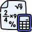

Computer Science

MathematicsMAT116 Pre-Calculus
Reference Book ->
Precalculus, , 10th Edition
ΘMentor ->
[MAM1]
Chapter-1: Graphs
Chapter-2: Functions and Their Graphs
Chapter-3: Linear and Quadratic Functions
MAT125 Introduction to Linear Algebra
Reference Book ->
Elementary Linear Algebra, , 9th
Edition
ΘMentor ->
Dr. Mahtab U. Ahmmed [Mde]
Chapter-1: Systems of Linear Equations and Matrices
Chapter-2: Determinants
Chapter-4: Euclidean Vector Spaces (1/2)
MAT120 Calculus and Analytical Geometry I
Reference Book ->
Calculus: Early Transcendentals, , 10th Edition
ΘMentor ->
[Thr]
Chapter-0: Before Calculus
Chapter-1: Limits and Continuity
Chapter-2: The Derivative
Chapter-3: Topics of Differentiation
Chapter-4: The Derivative in Graphing
Chapter-5: Integration (1/2)
MAT130 Calculus and Analytical Geometry II
Reference Book ->
Calculus: Early Transcendentals, , 10th Edition
ΘMentor ->
Mohammad Mahmud Hasan [MMH5]
Chapter-6: Applications of the Definite Integral in Geometry, Science, and Engineering (1/2)
Chapter-7: Principals of Integral Evaluation (2/3)
MAT250 Calculus and Analytical Geometry IV
Reference Book ->
Calculus: Early Transcendentals, , 10th Edition
ΘMentor ->
[Ads]
MAT350 Engineering Mathematics
ΦReference Book ->
A First Course in Differential Equations with Modeling Applications, , 10th Edition
ΨReference Book ->
Advanced Engineering Mathematics, , 10th Edition
ΘMentor ->
Dr. Md. Mamun Molla [Mla]
Topics: Ordinary Differential Equations (ODE), First Order ODE, Initial Value Problem (IVP), Homogeneous ODE, Linear ODE, Exact ODE, Higher Order ODEs, Cauchy-Euler Equation, System of Linear ODEs, Series Solution about Ordinary Points, Series Solution about Singular Points, Laplace Transform (LT), Numerical Solution of ODE, Runge-Kutta Method, Fourier Series.
Notes -> Part-1 -> View Download